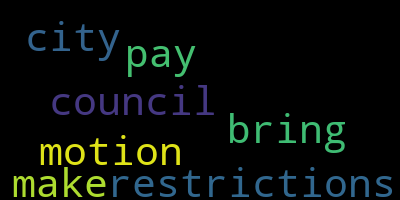

[Reporter Eagan]: Antoinette, the city says school committee members have not had a pay increase in 24 years, even though city council members have received increases in that time period. The proposal would raise pay for school committee members from $12,000 a year to more than $29,000 a year, a nearly 145% increase. The committee chair, vice chair and secretary would also see similar pay increases. There are seven people on that committee in total. The Medford City Council says the last pay raise for the school committee was in 2000 when the $12,000 rate was set. Council President Nicole Morell proposed this plan. She says historically women have filled the school committee seats and it's time to close what she calls a gender pay gap. However, not everyone agrees with her.
[Morell]: When we undervalue work for a long time, changing the financials and the mindset around it becomes hard. Simply reaching for equity of pay seems like an overreach.
[Scarpelli]: I would make the motion that we bring the city council pay down so we don't have restrictions.
[Reporter Eagan]: No last night was the first time the City Council took up this proposal and many parents and teachers were there to speak out against it. If proposed from if approved, the Medford public school budget would pay for those wage increases. The Medford Teachers Association issued a statement last week calling the proposal troubling. It says schools are already strapped for cash and paying the committee from the school budget would make it even harder to hire Antoinette.
|
total time: 0.15 minutes total words: 28 |
total time: 0.08 minutes total words: 18  |
||
{kind=link}
{kind=link}